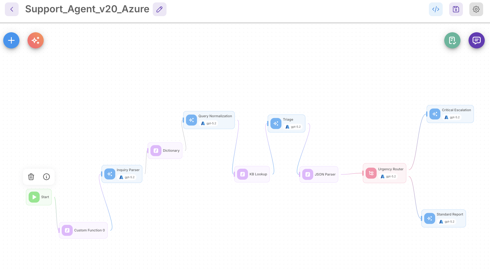

역할AI-Engineer (에이전트 파이프라인 설계·구축, 유사 사례 검색 로직 설계)
- ① 문제 발견
-
- 상황: 고객 지원 요청이 접수되면 엔지니어가 과거 유사 사례를 직접 찾아 초기 대응.
- 문제: 과거 장애·문의 이력(History)이 구글 드라이브·노션 등에 분산되어 수동 검색에 시간이 소요되고 초기 대응이 지연됨.
- 영향: 단순 문의까지 엔지니어가 직접 처리하여 중요한 업무에 집중하기 어려운 구조.
- ② 해결 방식
-
- 접근: 접수된 문의를 AI가 선제 분석하여 과거 유사 사례의 기술지원·트러블슈팅을 연결하고 1차 실마리와 문의의 긴급성·난이도·지원 방식을 판단하는 AI Support Agent 설계.
- 해결 과정: ① 임베딩 모델(BGE-m3-ko)로 과거 이력을 벡터화해 VectorDB(Qdrant)에 적재 → ② 고객 문의를 프롬프트로 적용해 키워드·유사도 매칭으로 유사 History 검색 → ③ Flowise 에이전트 빌더 파이프라인으로 LLM 판단·응답 구성.
- AI 활용 지점: Flowise 기반 에이전트에 Local LLM을 연결하여 유사 사례 요약과 1차 대응 방향 제시.
- ③ 성과
-
- AS-IS구글 드라이브·노션 등에 분산된 과거 장애 및 문의 이력(History)을 수동으로 검색하느라 초기 대응 지연 발생
- TO-BEAI 에이전트를 통한 사내 지식 통합 검색 환경을 구축하여 엔지니어의 정보 탐색 시간을 단축하고 신속한 고객 응대 파이프라인 마련
- TO-BE고객 문의를 프롬프트로 적용해 VectorDB 유사도 매칭으로 과거 유사 사례 History를 찾아내는 파이프라인 구조 확립
- TO-BE단순 문의는 빠르게 처리하여 엔지니어가 중요한 일에 집중할 수 있도록 돕고 점진적 향상으로 업무 효율 제고
- TO-BE음성/이메일/문자/이미지 4채널 통합 처리 파이프라인 확립
- ④ 한계와 개선
-
- 현상 및 한계: 문의 표현 방식의 미세한 차이로 인해 동일한 의도임에도 유사도 검색 시 서로 다른 과거 사례가 매칭되는 한계가 확인됨.
- 개선 방안: 중간 단계에 'Human-in-the-Loop(하이브리드 검증)' 방식을 도입하여, initial 검색 결과를 사람이 피드백하고 이를 기반으로 다시 재검색하도록 절차 개선.
- 개선 방안: 기존 BM25 알고리즘 기반의 희소 벡터(Sparse Vector) 방식으로 키워드를 저장,검색하는 로직 이었으나 의미론적 문맥을 이해할 수 있게 Dense Vector 방식을 추가한 Qdrant Hybrid Search(Sparse + Dense) 방식으로 구현
- ⑤ 프로젝트 아키텍처
-

- ⑥ 프로젝트 결과
-
- ⑦ 테스트 및 기술정리